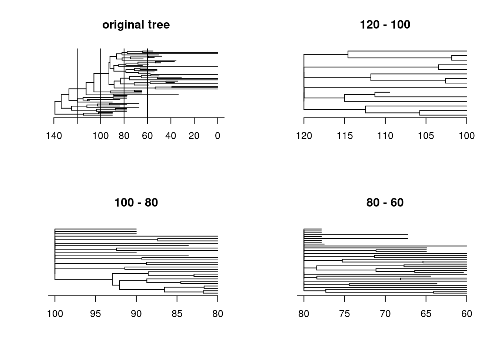

7 The guts of the dispRity package
7.1 Manipulating dispRity objects
Disparity analysis involves a lot of manipulation of many matrices (especially when bootstrapping) which can be impractical to visualise and will quickly overwhelm your R console.
Even the simple Beck and Lee 2014 example above produces an object with > 72 lines of lists of lists of matrices!
Therefore dispRity uses a specific class of object called a dispRity object.
These objects allow users to use S3 method functions such as summary.dispRity, plot.dispRity and print.dispRity.
dispRity also contains various utility functions that manipulate the dispRity object (e.g. sort.dispRity, extract.dispRity see the full list in the next section).
These functions modify the dispRity object without having to delve into its complex structure!
The full structure of a dispRity object is detailed here.
## Loading the example data
data(disparity)
## What is the class of the median_centroids object?
class(disparity)## [1] "dispRity"## What does the object contain?
names(disparity)## [1] "matrix" "tree" "call" "subsets" "disparity"## Summarising it using the S3 method print.dispRity
disparity## ---- dispRity object ----
## 7 continuous (acctran) time subsets for 99 elements in one matrix with 97 dimensions with 1 phylogenetic tree
## 90, 80, 70, 60, 50 ...
## Data was bootstrapped 100 times (method:"full") and rarefied to 20, 15, 10, 5 elements.
## Disparity was calculated as: c(median, centroids).Note that it is always possible to recall the full object using the argument all = TRUE in print.dispRity:
## Display the full object
print(disparity, all = TRUE)
## This is more nearly ~ 5000 lines on my 13 inch laptop screen!7.2 dispRity utilities
The package also provides some utility functions to facilitate multidimensional analysis.
7.2.1 dispRity object utilities
The first set of utilities are functions for manipulating dispRity objects:
7.2.1.1 make.dispRity
This function creates empty dispRity objects.
## Creating an empty dispRity object
make.dispRity()## Empty dispRity object.## Creating an "empty" dispRity object with a matrix
(disparity_obj <- make.dispRity(matrix(rnorm(20), 5, 4)))## ---- dispRity object ----
## Contains a matrix 5x4.7.2.1.2 fill.dispRity
This function initialises a dispRity object and generates its call properties.
## The dispRity object's call is indeed empty
disparity_obj$call## list()## Filling an empty disparity object (that needs to contain at least a matrix)
(disparity_obj <- fill.dispRity(disparity_obj))## Warning in check.data(data, match_call): Row names have been automatically
## added to data$matrix.## ---- dispRity object ----
## 5 elements in one matrix with 4 dimensions.## The dipRity object has now the correct minimal attributes
disparity_obj$call## $dimensions
## [1] 1 2 3 47.2.1.3 get.matrix
This function extracts a specific matrix from a disparity object. The matrix can be one of the bootstrapped matrices or/and a rarefied matrix.
## Extracting the matrix containing the coordinates of the elements at time 50
str(get.matrix(disparity, "50"))## num [1:18, 1:97] -0.1036 0.4318 0.3371 0.0501 0.685 ...
## - attr(*, "dimnames")=List of 2
## ..$ : chr [1:18] "Leptictis" "Dasypodidae" "n24" "Potamogalinae" ...
## ..$ : NULL## Extracting the 3rd bootstrapped matrix with the 2nd rarefaction level
## (15 elements) from the second group (80 Mya)
str(get.matrix(disparity, subsets = 1, bootstrap = 3, rarefaction = 2))## num [1:15, 1:97] -0.12948 -0.57973 0.00361 0.27123 0.27123 ...
## - attr(*, "dimnames")=List of 2
## ..$ : chr [1:15] "n15" "Maelestes" "n20" "n34" ...
## ..$ : NULL7.2.1.4 n.subsets
This function simply counts the number of subsets in a dispRity object.
## How many subsets are in this object?
n.subsets(disparity)## [1] 77.2.1.5 name.subsets
This function gets you the names of the subsets in a dispRity object as a vector.
## What are they called?
name.subsets(disparity)## [1] "90" "80" "70" "60" "50" "40" "30"7.2.1.6 size.subsets
This function tells the number of elements in each subsets of a dispRity object.
## How many elements are there in each subset?
size.subsets(disparity)## 90 80 70 60 50 40 30
## 18 22 23 21 18 15 107.2.1.7 get.subsets
This function creates a dispRity object that contains only elements from one specific subsets.
## Extracting all the data for the crown mammals
(crown_mammals <- get.subsets(disp_crown_stemBS, "Group.crown"))
## The object keeps the properties of the parent object but is composed of only one subsets
length(crown_mammals$subsets)7.2.1.8 combine.subsets
This function allows to merge different subsets.
## Combine the two first subsets in the dispRity data example
combine.subsets(disparity, c(1,2))Note that the computed values (bootstrapped data + disparity metric) are not merge.
7.2.1.9 get.disparity
This function extracts the calculated disparity values of a specific matrix.
## Extracting the observed disparity (default)
get.disparity(disparity)
## Extracting the disparity from the bootstrapped values from the
## 10th rarefaction level from the second subsets (80 Mya)
get.disparity(disparity, observed = FALSE, subsets = 2, rarefaction = 10)7.2.1.10 scale.dispRity
This is the modified S3 method for scale (scaling and/or centring) that can be applied to the disparity data of a dispRity object and can take optional arguments (for example the rescaling by dividing by a maximum value).
## Getting the disparity values of the time subsets
head(summary(disparity))
## Scaling the same disparity values
head(summary(scale.dispRity(disparity, scale = TRUE)))
## Scaling and centering:
head(summary(scale.dispRity(disparity, scale = TRUE, center = TRUE)))
## Rescaling the value by dividing by a maximum value
head(summary(scale.dispRity(disparity, max = 10)))7.2.1.11 sort.dispRity
This is the S3 method of sort for sorting the subsets alphabetically (default) or following a specific pattern.
## Sorting the disparity subsets in inverse alphabetic order
head(summary(sort(disparity, decreasing = TRUE)))
## Customised sorting
head(summary(sort(disparity, sort = c(7, 1, 3, 4, 5, 2, 6))))7.2.1.12 get.tree add.tree and remove.tree
These functions allow to manipulate the potential tree components of dispRity objects.
## Getting the tree component of a dispRity object
get.tree(disparity)
## Removing the tree
remove.tree(disparity)
## Adding a tree
add.tree(disparity, tree = BeckLee_tree)Note that get.tree can also be used to extract trees from different subsets (custom or continuous/discrete subsets).
For example, if we have three time bins like in the example below we have three time bins and we can extract the subtrees for these three time bins in different ways using the option subsets and to.root:
## Load the Beck & Lee 2014 data
data(BeckLee_tree) ; data(BeckLee_mat99) ; data(BeckLee_ages)
## Time binning (discrete method)
## Generate two discrete time bins from 120 to 40 Ma every 20 Ma
time_bins <- chrono.subsets(data = BeckLee_mat99, tree = BeckLee_tree,
method = "discrete", time = c(120, 100, 80, 60),
inc.nodes = TRUE, FADLAD = BeckLee_ages)
## Getting the subtrees all the way to the root
root_subsets <- get.tree(time_bins, subsets = TRUE)
## Plotting the bin contents
old_par <- par(mfrow = c(2,2))
plot(BeckLee_tree, main = "original tree", show.tip.label = FALSE)
axisPhylo()
abline(v = BeckLee_tree$root.time - c(120, 100, 80, 60))
for(i in 1:3) {
plot(root_subsets[[i]], main = names(root_subsets)[i],
show.tip.label = FALSE)
axisPhylo()
}
par(old_par)But we can also extract the subtrees containing only branch lengths for the actual bins using to.root = FALSE:
## Getting the subtrees all the way to the root
bin_subsets <- get.tree(time_bins, subsets = TRUE, to.root = FALSE)
## Plotting the bin contents
old_par <- par(mfrow = c(2,2))
plot(BeckLee_tree, main = "original tree", show.tip.label = FALSE)
axisPhylo()
abline(v = BeckLee_tree$root.time - c(120, 100, 80, 60))
for(i in 1:3) {
plot(bin_subsets[[i]], main = names(bin_subsets)[i],
show.tip.label = FALSE)
axisPhylo()
}
par(old_par)This can be useful for example for calculating the branch lengths in each bin:
## How many cumulated phylogenetic diversity in each bin?
lapply(bin_subsets, function(tree) sum(tree$edge.length))## $`120 - 100`
## [1] 189.2802
##
## $`100 - 80`
## [1] 341.7199
##
## $`80 - 60`
## [1] 426.74927.3 The dispRity object content
The functions above are utilities to easily and safely access different elements in the dispRity object.
Alternatively, of course, each elements can be accessed manually.
Here is an explanation on how it works.
The dispRity object is a list of two to four elements, each of which are detailed below:
$matrix: an object of classlistthat contains at least one object of classmatrix: the full multidimensional space.$call: an object of classlistcontaining information on thedispRityobject content.$subsets: an object of classlistcontaining the subsets of the multidimensional space.$disparity: an object of classlistcontaining the disparity values.
The dispRity object is loosely based on C structure objects.
In fact, it is composed of one unique instance of a matrix (the multidimensional space) upon which the metric function is called via “pointers” to only a certain number of elements and/or dimensions of this matrix.
This allows for: (1) faster and easily tractable execution time: the metric functions are called through apply family function and can be parallelised; and (2) a really low memory footprint: at any time, only one matrix (or list of matrices) is present in the R environment rather than multiple copies of it for each subset.
7.3.1 $matrix
This is the multidimensional space, stored in the R environment as a list object containing one or more matrix objects.
Each matrix requires row names but not column names (optional).
By default, if the row names are missing, dispRity function will arbitrarily generate them in numeric order (i.e. rownames(matrix) <- 1:nrow(matrix)).
This element of the dispRity object is never modified.
7.3.2 $call
This element contains the information on the dispRity object content.
It is a list that can contain the following:
$call$subsets: a vector ofcharacterwith information on the subsets type (either"continuous","discrete"or"custom"), their eventual model ("acctran","deltran","random","proximity","equal.split","gradual.split") and eventual information about the trees and matrices used throughchrono.subsets. This element generated only once viachrono.subsets()andcustom.subsets().$call$dimensions: either a singlenumericvalue indicating how many dimensions to use or a vector ofnumericvalues indicating which specific dimensions to use. This element is by default the number of columns in$matrixbut can be modified throughboot.matrix()ordispRity().$call$bootstrap: this is alistcontaining three elements:[[1]]: the number of bootstrap replicates (numeric)[[2]]: the bootstrap method (character)[[3]]: the rarefaction levels (numericvector)
$call$disparity: this is alistcontaining one element,$metric, that is alistcontaining the different functions passed to themetricargument indispRity. These arecallelements and get modified each time thedispRityfunction is used (the first element is the first metric(s), the second, the second metric(s), etc.).
7.3.3 $subsets
This element contain the eventual subsets of the multidimensional space.
It is a list of subset names.
Each subset name is in turn a list of at least one element called elements which is in turn a matrix.
This elements matrix is the raw (observed) elements in the subsets.
The elements matrix is composed of numeric values in one column and n rows (the number of elements in the subset).
Each of these values are a “pointer” (C inspired) to the element of the $matrix.
For example, lets assume a dispRity object called disparity, composed of at least one subsets called sub1:
disparity$subsets$sub1$elements
[,1]
[1,] 5
[2,] 4
[3,] 6
[4,] 7The values in the matrix “point” to the elements in $matrix: here, the multidimensional space with only the 4th, 5th, 6th and 7th elements.
The following elements in diparity$subsets$sub1 will correspond to the same “pointers” but drawn from the bootstrap replicates.
The columns will correspond to different bootstrap replicates.
For example:
disparity$subsets$sub1[[2]]
[,1] [,2] [,3] [,4]
[1,] 57 43 70 4
[2,] 43 44 4 4
[3,] 42 84 44 1
[4,] 84 7 2 10This signifies that we have four bootstrap pseudo-replicates pointing each time to four elements in $matrix.
The next element ([[3]]) will be the same for the eventual first rarefaction level (i.e. the resulting bootstrap matrix will have m rows where m is the number of elements for this rarefaction level).
The next element after that ([[4]]) will be the same for with an other rarefaction level and so forth…
When a probabilistic model was used to select the elements (models that have the "split" suffix, e.g. chrono.subsets(..., model = "gradual.split")), the $elements is a matrix containing a pair of elements of the matrix and a probability for sampling the first element in that list:
disparity$subsets$sub1$elements
[,1] [,2] [,3]
[1,] 73 36 0.01871893
[2,] 74 37 0.02555876
[3,] 33 38 0.85679821In this example, you can read the table row by row as: “there is a probability of 0.018 for sampling element 73 and a probability of 0.82 (1-0.018) of sampling element 36”.
7.3.4 $disparity
The $disparity element is identical to the $subsets element structure (a list of list(s) containing matrices) but the matrices don’t contain “pointers” to $matrix but the disparity result of the disparity metric applied to the “pointers”.
For example, in our first example ($elements) from above, if the disparity metric is of dimensions level 1, we would have:
disparity$disparity$sub1$elements
[,1]
[1,] 1.82This is the observed disparity (1.82) for the subset called sub1.
If the disparity metric is of dimension level 2 (say the function range that outputs two values), we would have:
disparity$disparity$sub1$elements
[,1]
[1,] 0.82
[2,] 2.82The following elements in the list follow the same logic as before: rows are disparity values (one row for a dimension level 1 metric, multiple for a dimensions level 2 metric) and columns are the bootstrap replicates (the bootstrap with all elements followed by the eventual rarefaction levels). For example for the bootstrap without rarefaction (second element of the list):
disparity$disparity$sub1[[2]]
[,1] [,2] [,3] [,4]
[1,] 1.744668 1.777418 1.781624 1.739679